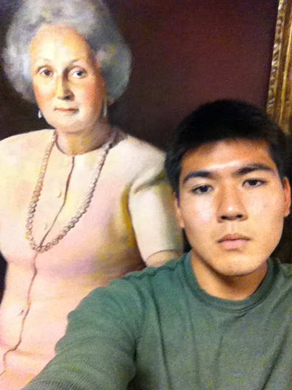

Week 1: Jesus everywhere
I flew in to South Bend on Sunday afternoon, and got I lost immediately. The Notre Dame campus is definitely a lot bigger than Vassar's. But between you and me, I think Vassar's campus is much prettier. The Notre Dame campus is nice, but it looks too … well-maintained. I wish there were more trees around!
The campus culture might take a bit to get used to. Since Notre Dame is a Catholic University, there are some things here that just wouldn't fly at secular, liberal (almost too liberal) Vassar. Like the statues of Jesus in tons of buildings. Or the chapels in every dorm. The biggest change for me was the gendered dorms. This past year at Vassar, I lived in an on-campus house with one other guy and three girls. Now, I'm surrounded by only men. Sciencey-researching men and big burly football playing men. Men men men everywhere. I wonder how Notre Dame students make friends with the opposite gender. It's crazy to me that here, guys can't be in girls' dorms past 12am and vice versa (it's extended 2am on the weekends! Whooooaaaaa stop the press!) Oh well. I'll probably get used to it.

Week 2: EVERYTHING'S CLOSED
The only thing more soul-crushing than a university in the summer? A university in the summer … on a weekend. The campus store: closed. The gym: closed. The cafe: closed. My childlike sense of joy and wonder: dead. Saturday night dinner went a little like this:
1) Look at the clock and panic because everything's already closed after 7pm.
2) Run down the the first floor and examine the wonderful offerings of the vending machine.
3) int chipBags = 0;
while(chipBags<= 3) {
buy a bag of chips;
wolf it down;
cry;
chipBags++;}

Week 3: World Cup!
The FIFA World Cup officially started this week. I usually never watch soccer (football, as non-Americans keep reminding me) but during the World Cup I hop on the soccer bandwagon hard. In the next few weeks, I'm going to learn all about the national teams, their key players, their underlying philosophies, and their coaching styles. Then I'm going to forget all about it for 4 years. Japan lost their first match, but the USA won theirs.
In other unrelated news, I had South Bend Chinese food this week. It was fantastic. General Tso whispered sweet nothings in my ear as I dozed off to sleep that night. It's crazy how no matter where you are in the country, low-quality American Chinese food always tastes the same. It's the one constant I can count on wherever I go. Chinese food even tasted the same in Trinidad and Tobago!!
Week 4: St. Joseph's Lake
This week a few of my friends took me to St. Joseph's lake, which is a small lake on campus. We got to rent a canoe and paddle around! I learned that there's a power plant right by the lake, and because of it the lake never freezes in the winter. Notre Dame has its own power plant. God, this is a weird place.

Week 5: 'Murica
I played capture the flag! It was fun but exhausting.
Later in the week I took a trip to Chicago for Independence Day. It's a very clean and beautiful city, and the food is delicious! Also it's one of the most racially segregated cities in the country and there were over 60 people injured in shootings over the weekend but I got to see fireworks, so happy America Day everyone. What a great country.
Week 6: Tacos
I went into downtown South Bend this week. Quick, think of a really generic town. Now make it 10 times more depressing. Does it look like a Scooby-Doo ghost town yet? If it does, congrats! You've just imagined what downtown South Bend is like!
All jokes aside, it's not that bad. We ate some delicious tacos!
Week 7: Silver Hawks!
The computer science department was kind enough to pay for the staff and students in the department to go see the South Bend Silver Hawks, the town's Minor League Baseball team. It was A LOT more fun than it sounds, I promise. We ate hot dogs and hamburgers, got free hats, and the urinals had little soccer goals inside! The stadium was renovated within the last 3 years, and it was clear that the new owners meant business. There were all sorts of attractions to lure kids and adults alike, including bouncy castles, picnic areas, and a small waterpark. It was a nice place.
In other news, I took a GRE practice test this week. It was free, as long as you don't consider Kaplan pestering you to buy their products and services as a fee. The GRE is basically a glorified SAT, and not much more difficult. And yet Kaplan thinks it is justified in charging anywhere from $100 to $4000(!!!) for their services! The whole standardized testing industry makes me sick to my stomach. Not only is it unnecessarily expensive and parasitic, it blatantly hinders social mobility and keeps the poorer students from succeeding.
Weeks 8 & 9: Chicago again
A couple of my friends took a road trip to visit me here in the midwest! They drove 13 hours from New York to pick me up at South Bend and continued on through to Chicago. We watched standup comedy, went to bars filled with bros, and ate at the most hipster restaurant I've ever seen (rooftop gardens, locally sourced everything, bearded waiter). It was a good weekend.
Week 10: Bye bye Jesus
Well, it's finally the end of my time at South Bend. It was a packed summer, full of new experiences and different people. Two months ago, I didn't think a University could be so Catholic. I didn't think every student here would love football. I didn't think running into crucifixion statues at night would be so scary! But most of all, I didn't think my summer would be this fun.
So it is with a heavy heart that I have to say goodbye to Jesus. I hopefully won't be surrounded by this many Jesus statues/paintings/texts anytime in the near future. Sorry homie!